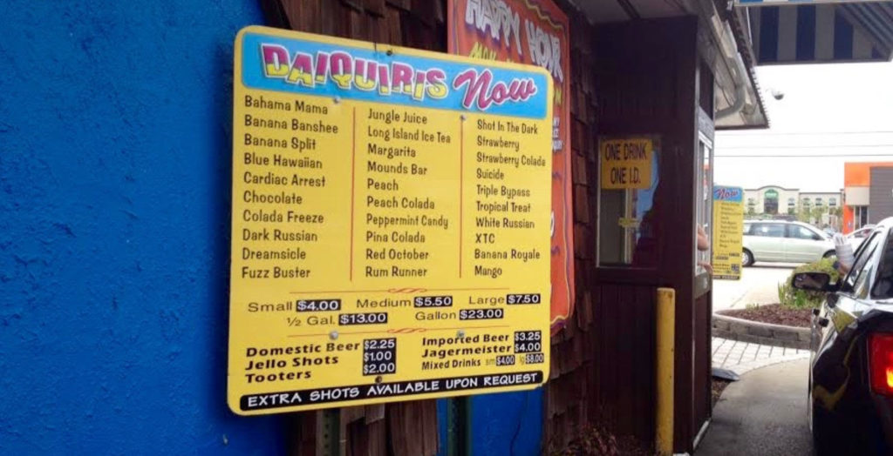
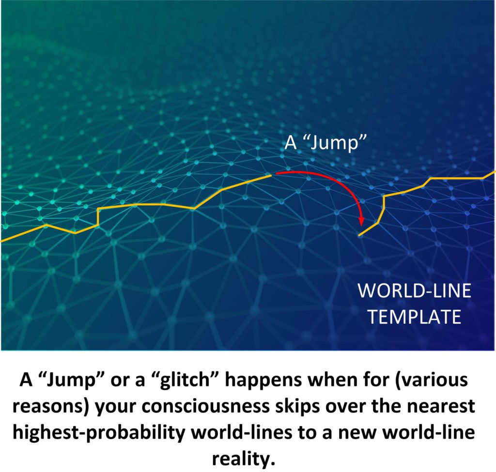
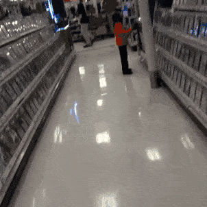

Hello everyone. Did you know that I died? Yup. I did. But, you know, I didn’t really die. I just experienced a sudden death event that was short duration and then snapped to a nearby world-line.
Strange, eh? Yeah it was.
In 1992 I was living in Hattiesburg, Mississippi. I loved it there. Rural. Lush. Friendly. Great catfish. Easy going. Warm. Fragrant. Great place to live. But the people couldn’t drive for shit. I mean it. The road would be straight as an arrow for miles and miles and miles, and sure as shit, someone would drive off the road and hit the only tree for miles around.
Or, maybe it’s because of the “The Drive-Thru Daiquiri stands” in Louisiana, eh?

Anyways, I’m in the car with my wife (at the time) and we are at an intersection. As I recall we had one of our cats with us. Probably taking it to or from the vet in it’s car-carrier. We drive down the twisty rural road and go to the intersection of one of the major highways in Mississippi.
I look left, and I look right, and suddenly I’m dizzy. An emergency slide occurs. Next three seconds, I’m reliving the moment. I put my foot on the brake hard. And a tractor trailer flies right in front of me.
We (my wife and I) died.
But we didn’t.
That is an event that I want to stress. And that I want to discuss right now. And you can say that it was my imagination, or that my guardian angel was by my side, or that I am reading too much into it, I can tell you that I know what happened and the mechanisms involved.
I died.
A tractor-trailer rig was flying down the road and hit me square on the drivers side and smashed my body into a bag of jelly and bones, and completely wiped out my wife next to me. Bam! Swoosh!
Restart button.
The world, the universe, the MWI is not at all what you think, and you have far better control on what will happen in your life than you believe.
There was a Star Trek (The Next Generation) Episode that rings a bell here…
Here’s some science fiction to get us started in this journey…
A temporal causality loop, also known as a causality loop or a repeating time loop, is a type of phenomenon whereby a specific moment in time repeats itself continually inside an independent fragment of time. (TNG: "Cause and Effect"; VOY: "Coda", "Q2", DIS: "Magic to Make the Sanest Man Go Mad")
Ai! It’s science fiction. But you know, it can be useful to understand (sort of) what is going on.
The following is an article titled "Cause and Effect: The Star Trek: TNG Episode That Stuck with Me" or the by-line "How one time loop stayed with a fan long after the Enterprise escaped." It was written by Christina Griffith on 16DEC20. Reprinted as found. All credit to the author. Edited to fit this venue.
Stories that don’t fit conventional understanding
Here’s some stories that I have collected on the internet. They are, I believe true, as viewed by the person telling and relating the story. Other people have experienced what I have experienced, and it is only because of my role within the MAJ and our benefactors that I have some degree of insight as to what is going on (and some examples where I don’t).
I place it here for thoughtful consideration.
Examples of World-line slides that I collected from the internet.
We will begin with a narrative that describes something similar to what I experienced so long ago. A guy died, but then didn’t.
Death
So this actually happened last week… It just took me some time to come to terms with it…
I got a phone call from my next door neighbor late in the evening asking if I can help him move a mattress into his upstairs. His mom is ill and has a big heavy sleep number bed. I of course ran over to help because they’re great neighbors.
I get over there and his friend, who is also a priest, was there to help. I helped them figure out how to separate the mattress from the bed so we could fit it up stairs. We get it all moved up and back in place when my neighbor asks if I can help them move an armoire upstairs too. I think nothing of it and we pull it out of his travel trailer and start bringing it up the front stairs of his house.
This is where I died. The front stairs are 11 steps. I was on the lower end of the armoire about 6 steps up when my neighbor and his friend lose a handle on the armoire and it comes crashing down on me and I fall backwards towards the pavement…
I then wake up in my dining room to my phone ringing and my wife asking me if I’m going to answer the phone. It’s my neighbor asking me if I can help move a bed upstairs for his mom…
I go over there and meet his priest friend again, as this has been the first time I met him. I say I can help with the bed but I cannot help with the armoire. My neighbor was like “how’d you know about the armoire?”. I then proceeded to tell them I’m pretty sure I just died.
I spent the next hour talking with the priest.
He had so many questions. My neighbor didn’t believe it until I described the upstairs bedroom in perfect detail down to the metal mattress frame on the floor and the intricate headboard leaning against the wall and I had never been upstairs in their house before.
The priest asked me what I saw after I died. I told him I never actually died. Before it happened I woke up at my dining room table.
TL;DR… I experienced my death but woke up alive about 20 minutes earlier in my life.
Accident
And here’s another example, from another person.
My mom and I were on the highway driving home, and there was a semi truck in the lane next to us. Suddenly the semi swerved in to our lane. Luckily my mom was able to get out of the way before it hit us, but soon after I began feeling strangely. The entire right side of my face felt hot and sticky, I tasted blood, and smelled the very pungent scent of gasoline. Then my head and right arm started to ache really badly, and I couldn’t feel my legs. Just as soon as the pain started to worsen, it went away, replaced with a cold eerie chill. I told my mom about this and she couldn’t come up with an explanation. I think I was feeling the pain in another timeline where my mom wasn’t able to avoid that semi.
Signpost
Here’s yet another…
So I work for a joinery company and was delivering a load to a construction site about an hour away from work, and whenever I’m out and about, I just play reddit compilation videos through my headphones.
I was about 8 minutes into a video when in the middle of the town at a red light, with a bad feeling of deja vu. the video started buffering. I thought it was odd since I had good reception but was just going to wait it out. The light went green, and the video played just long enough to say the word “wait” and started buffering again. I couldn’t see anything at all, The road was clear, but I thought I’d listen, looked left, then right again and there was a massive semi at Speed that appeared out of nowhere and ran the red light. It would have taken out the drivers side of the cab, and I’d have been toast if I didn’t wait. Definitely reminded me of my own mortality.
A redo
And yet another example, only from a bystander.
This technically happened last night, but I was just starting a graveyard shift and am only now getting it all down.
I work at a gas station chain with only numbers in its name. We’re just outside of a large chunk of suburbs- none if that “middle of nowhere”, like we aren’t exactly near any other businesses but we are rarely completely dead for hours at a time.
It was just past midnight, and with everything going on in the US right now not a lot of things other than gas stations and bars are open at night anymore so it was a slower evening.
I was the only one in the store and a car pulled up to one if the 2 double-sided pumps out front. Pretty standard white four door. I’m not great with car brands but it was a little nicer, like upper middle class and probably only a few years old.
A woman gets out and starts walking towards our door like she’s in a daze. Legit this woman looked like she saw a ghost. She wanders up, sort of freezes at the door for a second with a thousand yard stare before opening it and coming in. She didn’t go looking for anything, didn’t start shopping, just sort of stood inside for what felt like ages.
Again, bars are still open so I think maybe she’s a little drunk or had a rough night or something so I give the usual “Welcome to ‘gas station’ let me know if you need any help finding anything” and she finally notices me and immediately asks me the weirdest damn question I have ever been asked on the job. “You can see me right?”
“Yeah”. Like what else do you say? She breaks down crying in the middle of my store so I’m already headed around the corner to see what’s up. I have my cellphone out incase I need to call the cops or something for her.
I get her to sit down on a nearby pallet of soda and I’m grabbing her a bottle of water and after she catches her breath a little she tells me “I thought I had died”. Again I’m thinking maybe she is on something but she’s a middle aged woman who looks like a standard local suburban housewife. We’re a pretty boring township without your average junkies like you’d find closer to the cities.
So she asks if she can call her husband to pick her up and wait with me. She has her own phone and does so, not really telling him anything either just where she is at and if he can come get her. He says he’ll call an uber and be there as soon as possible.
We’re waiting, so far nobody else has showed up, so I’m keeping most of my attention on her- and eventually she starts to explain to me-
“I was driving home from dinner with my coworkers and as I’m driving through (nearby intersection I recognized) a truck ran a redlight and hit me.” Now, her car is still at the pump without a scratch on it. She goes on to say she remembers her car being pushed into a pole, going airborne, and then nothing.
I tried to calm her down letting her know that her car is out front and it looks fine, but she insisted that she completely blacked out, woke up in an ambulance for a split second, passed out again, and then woke up again in the driver seat of her car- at the intersection waiting for the light to change, perfectly fine.
This whole thing freaked her out so badly that she drove to the nearest anything (us) just so she could get out of the car.
Husband eventually showed up to get her. He asked if I had any idea what happened and even though she sort of explained to me I just shrugged because no, I had no idea what was happening anymore. She reluctantly got into the passenger seat of the car and he drove them back home.
That was hours ago, after which I worked an entire shift at the station trying to wrap my head around what the absolute hell I had just witnessed.
World-line slide
What about this one…
Do you guys know the whole theory about how when people die in one time line, they shift into another? I think that may have happened to me.
Back in early July of this year, my family (M45, F54, Me:19, B16), S(13) were going on a road trip to Montana to visit our grandparents. Prior to the trip, I had a horrible, horrible feeling about going. I kept having flashes of car accidents in my head, and I was sure that we were going to get in one if we left. It was so strange, because I have a pretty severe anxiety disorder, but this didn’t feel like my anxiety at all, and I never have anxiety about road trips: I love them!!
So we left Saturday of that week, I had told my parents I had a bad feeling about driving up there, but they dismissed me as being anxious, but I had never felt so certain about something in my life. Getting into that car felt like signing my death sentence. So we get about 6 hours in, and at this point, I start to think I was being ridiculous, and a wave of calmness just washes over me. This is where shit gets strange. My dad passes an underpass and everything just shifts. I feel like I saw everything in slow motion for a whole 4 or so minutes. My parents were joking beforehand, but their faces moved so slowly, and then the light in the car started to shift. This was the scary part because I thought I must have been going insane. For a few seconds, there was a huge illumination of light into our car, and I looked at my family, and could not tell who they were or what they meant to me. And then it’s like everything just came back. The light shifted back, and I knew who everyone was, but it felt like something imperceptible had changed.
I closed my eyes and tried to make sense of the past few minutes, and when I reached back to remember; I saw blood, our car and another minivan in shambles on the side of the highway right beyond the underpass, and mangled bodies. I remembered sensations I should not have known: what spattered brain matter looks like, the smell of something burning, the way I couldn’t breathe. But this never happened? Yet I remember that the car in front of us had switched lanes even though there was a truck in front of us, realized it at the last second, and hit us with a lateral impact.
I have no history of psychosis, and I have never been in any sort of car accident. This wasn’t PTSD, and I have never had anxiety over being in the car in any sort of way prior to this. And maybe I could have just brushed it off, but I still think about it when I’m driving in my own car. And it’s made me a more cautious driver. I don’t know what happened, it was just a weird situation, and I remember having the distinct feeling in that moment that I had died in some sense. I am not a spiritually sensitive person by any means, I am a scientist at heart, but this truly was something I cannot explain. And I fully accept that I might be reading to much into this, and for some reason, I imagined an event that never happened, but I thought I would share anyway.
Accident
I was driving about 50 mph, and a car ran a stop sign on an on ramp and pulled out right in front of me. I remember bracing for impact and then I was about 300 yards down the highway and I saw the car at the ramp in my rearview, just about to pull out. –Chaithecat
Blink and you are elsewhere
But you know, it doesn’t necessarily mean that someone needs to have a near-death experience…
This is only a small thing, but it still confuses the hell out of me and I can’t think of any explanation.
I was playing fetch with my dog in my living room. I threw the ball, she’d bring it back, you get it. My dog dropped the ball on my foot and waited whilst I leant down to pick it up, but then I blinked and it was gone.
I quickly checked under the sofa, thinking she’d nudged it under there or I’d accidentally kicked it, but it was nowhere to be seen. My dog was still staring at the spot where she dropped it and when it disappeared she looked just as confused as I was and jumped round looking for it.
I scoured the whole room (which wasn’t very big) and eventually found it on the opposite side of the room in the middle of the floor, even after I’d looked everywhere. We only had this one particular ball at the time, so we couldn’t have mistaken it for another one.
Not particularly exciting, but I can’t think of any explanation. My dog was just happy to have her ball back at least.
Doggie Mysteries
Dogs can be a trip…
About 30 seconds ago I was sitting on the couch, as my dog walked by to go sit on her bed we have behind the “L” part of the sectional. She had something small caught in her throat last night, I think a popcorn shell, so I was paying attention to her breathing just to make sure she got it out.
For a few minutes she was breathing fine, and then what sounded like a light snore started happening. This is semi-normal for her depending on what position she’s laying in, so I didn’t bother to go over and check on her. That went on for about 5 minutes, until the most disgusting(and to my now realization, terrifying) snore/cough/wheezing sound started happening. I go over to her to make sure she’s okay, and the exact moment I looked at her bed the sound stoped ‘mid-breath’ and she wasn’t there.
She was outside with my parents, had been for around 30 minutes. There’s no way to get out of the room without walking right past me. I don’t know who’s fucking dog I saw, and what was making that creepy ass sound 5 feet away from me, but I’m going to be staying outside for the rest of the day and hiring an exorcist.
A Slide
And this one…
My dad drank out of the same black cup everyday. One day he filled up a different white cup. I asked him what gives and he claimed to always have used that cup. I asked the rest of my family and they all said the same thing.
Slide to a different world-line template
As is this one…
I dropped my phone in the kitchen and I looked to grab it off of the floor but it wasn’t there. I heard it hit the floor but I couldn’t find it. It was in the middle of the room too, there was no way it could’ve gone more than 3 feet away from me. I checked under everything and went through the entire house looking for it but it was gone. I had my mom call my phone and it said that my line was disconnected. I checked the Find My IPhone app and it said it couldn’t find my phone because it couldn’t find a signal. That was 4 years ago, and we still haven’t found it. It’s like it hit the ground and immediately disappeared afterwards.
Shared memories of a different world-line
And check out this one…
My husband recently took an overnights job to help us out during covid. He’s only been there about two weeks and works evenings/overnights, 9pm-6am.
Last night was no different, he left home around 8:15pm. Our daughter, age 11, and I decided to make it a movie night. Around 11pm, I heard keys in my backdoor and the usual sounds my husband makes when he comes home. I creep out to the kitchen to make sure it was him, and it was. He told me he needed to grab his knee compression sleeve, walks down the hall, says hi to our daughter as he passes the living room, and goes upstairs. He came back down, gave me a kiss and left again.
We finished our movie and went to bed. In the morning when he got home I made a joking comment about him forgetting his knee sleeve. He was genuinely confused as I recalled the previous night. Our daughter confirmed everything I said and he still was acting confused. I pulled up our security motion camera on my phone to show him when he popped in quick. But there was no footage from the night before, or any other night, of him coming home after he’s left for work.
My daughter and I both heard him, saw him, and I touched him. But he was never home during that time. Nothing else out of the ordinary happened that night. We seriously have no idea what happened.
Memory wipe
And check out this one…
The year was 2011. I was in med school while my brother joined engineering college in same city.my brother is 3 years younger to me.
One day i asked him to come to my hostel as it was his free day from college.(he used to come in his free day as he missed family )
We were chatting and having foods while he suddenly asked me about a girl.
Convo
Bro- do you remember nisha(altered name for obvious reason)?
Me-nisha,who??
Bro-it seems like you have forgotten her.good for you.
Me(visibly confused)-which nisha you are talking about?
Bro(still playing)- don’t try so hard brother.you know exactly about whom i am taking about. Leave it if that’s still hurting you.i shouldn’t have bring her up.
Me(thinking that he is pulling my leg,i started to play along)- yeah i remember.i forgot her.it was bitter.i am not in touch with her.
Bro-it is not like that you can be in touch with her anyway..
Me(trying to play along)- yeah.she is probably married by now.
Bro(visibly confused)- now what nisha are you talking about???
Me-exactly the nisha you are talking about..
Bro-leave it then..
Me-yeah..
After 30 or so minutes after lunch is over
Bro-do you really not remember her?nisha?
Me(tired of this game,agitated)- bro stop this game it’s not funny anymore.i am tired of this stupid game.
Bro-what game ?
Me-i don’t really know nisha.who is she?
Bro-forget it.
And he left for the day…
I asked mom after few days about nisha.she was distraught when i asked about her.after few mon she told me that she was my gf while i was in school.she was my brothers best friend. she died in a car accident few years back.
I was dumbfounded.i don’t even recall her name,face,memory .nothing..
Her memory is totally wiped out from me.
I was disturbed and went back to home where mom showed me a pic where i was with a girl and my brother.i don’t even remember the girl.
In some cases of ptsd selective amnesia happens.but that repressed memory can be triggered by related memory.but in this case i didn’t even recall her.i was agitated because i don’t remember her.
Till this day i don’t recall anything.according to family, we were close.i didn’t try to ask her family or any other people because it seems insensitive..
World-line slide
Check out this one…
Me (M26) and my girlfriend (F25) have been living together in an apartment for two and a half years. Everything has been normal until quarantine started (around 4 weeks ago), when I started noticing some odd things.
For instance, for the last three weeks or so, my GF has been putting sugar in her morning coffee, while throughout our entire relationship she’s always been very much against it. It may seem like a small detail, but she’s always been complaining about how I don’t know what real coffee is since I put quite a lot of sugar. On the first day that I saw her drinking coffee with sugar I asked her why would she do that, and she looked at me weirded out and said something like “What are you talking about? I’ve always been putting sugar in my coffee”. I felt a bit confused for a moment but then we started talking about some other things, so I didn’t think anymore about it until the morning after, when she did the exactly same thing, and had once again the same reaction.
Fast forward a few days and another odd thing happened. We were having sex and she suddenly suggested a sex pose that we had already tried once, but it had gone wrong and it hurt her a lot so we had simply decided not to try it anymore. Naturally, I was very surprised with her suggestion, and reminded her about the time when it went wrong, and she just completely dismissed it, saying that i probably mixed her up with some ex-girlfriend or that I was just tripping. We then did the pose and we actually enjoyed it.
Today, the weirdest thing happened, which is the reason I’m writing this post. In the afternoon, I was working at home (I’m employed as a PhD student at the computer science department of a university), when my gf asked me what’s up with a guy who I’ve never heard of before. I asked her who is she referring to and she said “Well, it’s that colleague of yours who you always talk about, the one from the company where you are employed at”. I froze, and asked her to repeat, and she said the exactly same thing all over again. Then I told her that I don’t work at any company nor have I ever worked at any company, since I started a PhD straight after my Master degree. At this point, she also completely froze and we were just staring at each other completely confused and shocked for a few moments. She then asked me wtf is going on and I reminded her about the coffee thing and about the sex pose and that I don’t know anymore what is going on. At this point, she started crying too and asked what is wrong with us.
Nor she, nor me nor anyone in both families have ever had any mental problems in the past. We don’t know what to do about this.
Can anyone explain what’s wrong with us?
Yah. It’s all pretty crazy.
But all of the above examples can be explained as either intentional, or accidental slides or cross-dimensional effects.
Some examples of slides
Here’s some examples of what the slides or pre-birth world-line template switches work.
In the first example is a “slide”. You actually “fall off” your pre-birth world-line template, or the template map that you have been following and onto a new map, a new template. It diagrammatically looks something a little bit like this…
I have described slides in other posts. But in this post I also bring up “Glitches” and “jumps”. These are mini-changes to the world-line path that may or may not result in a slide to a new map.
And here’s an example of a “glitch” or a “jump”.

I really do not know why these things happen, or the mechanisms involved. I just know that they do happen, but are not an “everyday” occurrence. In a person’s life, it might only happen once in a “blue moon”.
The easiest explanation for a “almost death” is that it just wasn’t your time. But that’s a pretty lazy answer. Don’t you think? But it’s the most reasonable answer that I can think of.
As far as “glitches”, “jumps”, and “accidental slides” go, I just haven’t much of a clue. There are “holes” in our reality that open and close, and sometimes we, or things, fall through them.
And as far as I am concerned, obviously, I was “pulled out of harms way” intentionally in an “emergency slide”. The mechanism and what was going on, well… I haven’t a clue.
Let’s look at some other events which might be misunderstandings, examples of elements within our MWI, or something else. In any event, they could be “head scratchers”…
Hello Son
So, this happened about seven or eight years ago. My husband and I were laying in the bed one night, watching television. Out of the corner of my eye, I saw a child in the doorway of our bedroom. Thinking it was our only child at the time, I tapped my hubby and said “Hey, shhhh b look, but I think Connor is going to try to scare us ! He turns and looks and this child walked into our room. I can’t explain it, bc it was one of those moments that seemed … somehow different. We watched in silence, soon realizing that this child was NOT out son. He toddles in, head slightly tilted back, curls bouncing and diaper squish squishing as he goes to the end of our bed.. we see his head go down (like he was crouching) and when we got up to look- he was gone. I looked at chris (my husband) and said “ Did we just see a ghost?!” Then, almost as an after thought, I said “well, we know if we have another baby, and he has curls, that he was here before he was born.” We both laugh, bc We were not trying for another baby at the time. Fascinated, we go to check on our son, and he was fast asleep. A few months later.. I’m pregnant. (Surprise!) So fast forward aNd our new baby, Liam, is two. He toddles in the room, head titled slightly back and curls bouncing, and it hit me like a bucket of ice water.. holy crap, this is the baby that came to visit us! I mean, there is absolutely no doubt in my mind.. now, on top of that, whenever Liam is staying the night elsewhere (like with my parents) he comes to visit me in my sleep .. for example- one time he came and just smiled at me while I was taking a nap.. He was in a little red shirt, and his hair was cut short (he left with it long) the next day I go to pick the kiddos up from mom, and lo and behold- his hair is freshly shorn and he is wearing a little red shirt. I asked my mom “did he wear this yesterday?” And she replies “oh, yeah he did, but he insisted on wearing it today, so he is..”. So, I look at him and say “did you go see momma yesterday in mommas dreams” he just looked at me (he was four) all big blue eyes and serious, and nodded his head.
So that’s my glitch in the matrix story. One of many, but the most profound. Our son, I guess, travels astral, and even stopped to see us before he was born. I would know those curls anywhere. the fact that my husband witnessed it with me makes it even more weird, but utterly fascinating. Thanks for reading and forgive typos please
Message
My mom died 13 years ago. About four years ago my dad was on vacation in Arizona with his girlfriend. He said he was up watching tv and the hotel phone rang.
He answered it and said it was my moms voice saying “I’m ok” he said he said “Cass?” And he said the phone was crackly and said tell HEATHER (me) I am ok” he said his girlfriend was confused why the phone ring.
He immediately called me even though it was late and he was crying. My dad doesn’t believe in the supernatural but still to this day can’t explain that call.
Message through time
Three days ago I was having conversation with my father and he was telling me about his university life. Basically my dad came from nothing, he had a very difficult up bringing and went to the worst school and high school in our city. When it was time for him to join university, my grandfather passed away leaving my dad to take care for the rest of the family as he was the oldest son. He took a wrong a major because of the wrong advices of the people and how he regrets that to this day. The courses were taught in English which is a second language for us and how he didn’t even know the language. My dad told me that it was the darkest times in his life and he just wanted to run away and was even thinking of taking his own life. Now very recently he got his masters in English literature and he was telling me that he didn’t think it would be ever possible for him. My dad just recently finished this degree at an age of 55.
The next morning my dad had to drive to this town because his distant relatives live there and they are struggling financially, my dad is very a kind soul and he wanted to help them . The town is 3 hours drive away. He usually takes public transport but didn’t because of recent crisis. He drove there and my mom was worried so we decided we will keep calling him after every hour to check. Well i decided to call him , now keep in mind because it’s highway network signals get very weak. He told me to wait and parked at a nearby restaurant it was like a check point for trucks. I don’t know what came over me but I started crying and went on to tell him how proud i was of him, i just babbled and kept saying that he shouldn’t think he is lacking because he is not. He was an amazing father and a great person to look up to.
You guys my dad started crying he told me that he will talk to me when he returns. Well he returned and he just hugged me and was telling me that how 30 years ago he was visiting the same town and it was the time when he was at his lowest. He was visiting the same relatives and he was in a bus which stopped at a petrol station. He called his mother and when he picked the phone without even dialling he heard my voice. It was me telling him the exact same thing which I just said yesterday. He said that he didn’t even called my grandmother, he just stood there and cried. It gave him strength to keep fighting. He said he just now realized it was me whose voice he heard.
My parents are now taking this as sign from God who helped my dad when he thought no one was there for him.
World-line switch
I am a bit shocked.
I had a very good friend who crafted small jewellery and I have a few pieces from her. I got a pair of earrings more than 8 years ago and lost one of it after wearing them just a couple of times.
I always told her she had to craft a replacement but unfortunately she got very sick and died of cancer very quickly, she never had the chance to craft anything else.
I kept the single earring in a little box with some other small random memories and trinkets.
I am now moving to my own place and checking the memories in this little box, both earrings are there and I can’t explain when or how or why.
Probably in other universe my own me lost the unique earring she had.
World-line glitch
This is my first post, so bear with me, but after reading many other glitch stories, I wanted to share mine here.
In early December 2015, my now ex-boyfriend’s mother passed away in the home following surgery and other health problems related to her heart (she was born with a rare condition). Unfortunately she went into cardiac arrest and we were unable to save her, so the event in and of itself was extremely traumatic and unexpected.
A couple of nights later, we decided to go see some friends who wanted to offer their condolences to my ex; everyone loved his mom. We were all sitting in our friends’ living room watching tv and, to be honest, they were really trying to distract us from everything.
One friend was just being her goofy self and I was taking Snapchat videos and I DISTINCTLY remember taking a video of (let’s call her) Amy… I saved the video, but when I looked at my screen to watch it, it was not Amy…. it was a grainy video with a background that appeared to be outside and 100000% not in a living room, but on the screen was my ex’s mom…
She said the words, “I’m okay baby. I’m okay” and multiple other friends saw it on my phone before it disappeared. She looked young and vibrant and has a huge smile on her face. Someone had tossed my phone to another friend across the couch to see and the video then disappeared. When we watched the original video back immediately after, my ex’s mom was gone. It was Amy in the video again just like I saw it while recording it in the first place.
My ex and his mom had a very close relationship, best friends really, so when we saw her on my screen letting him know she was okay… it was astounding.
I saw it first and everyone noticed i was visibly upset. I cannot imagine what went through my ex’s mind and heart when he saw that, but to this day, it’s something we talk about and something he shares with new friends… something we simply cannot explain other than her coming thru in a glitch to let us know she was okay.
Visit to the past
I live in a very small town. We have a small grocery store, hardware store, you know the drill. I was done getting groceries and hopped in my car to head home. As I pulled up to the end of the driveway of the store, blinker on to get onto the main road, I see a big, white, lifted Chevy pickup driving toward me that I need to wait for. I watch it as drives closer to me, remarking to myself that it looks so similar to my husband’s, just older and rusted around the edges. It even has the same black emblem and large iron cross bumper. As the truck goes past me my jaw nearly fell open. Staring at me intently was a man almost identical to my husband… but with a longer, greying beard, and grey hair around the ears. I quickly gathered myself together and pulled out behind the truck and up to the stop sign that followed. He was staring at me still in his side mirror. Glancing away and then staring at me again. He took off like a shot the first chance he got, and I tried to follow to see which direction he took, but a car was coming and I couldn’t get out behind him in time. The truck sped off toward my road, but I don’t know if he turned in that direction or not.
I know that’s a little crazy, but I couldn’t help feeling the total connection I feel with my husband when I saw his reflection in that side mirror staring at me. It gives me goosebumps to think about it because it was like he knew that I was me, and I was the wrong age, and that he needed to get out of there before i could follow. I got home and my husband was there, working in his woodshop. I told him about it and he chuckled and asked if he looked hot when he was old. I mean…. he did if it was really him!
Disappearing gal
So mobile alert . This happened two days ago.
I was at my home because of quarantine and according to me i was sleeping.
When i woke up my mom was looking at me having a very shocked and worried expression and tears in her eyes. She asked me where the hell i was and i said that i was sleeping right here in my bed. She didn’t believe me said she checked and i wasn’t there.
So apparently, my family woke up in the morning and i didn’t come for breakfast, my dad came into my room and just saw the blanket and pillow (i do sleep with blanket on face). Then my mom came to wake me up and took the blanket off no one was there . Then she panicked and told my dad. They searched the entire house and tried calling me nothing worked. Then they asked the neighbours if they had seen me leaving but neighbours couldn’t help as well. My mom was very afraid at that point and they called the police and that’s when my dad had went to file the report and i woke up.
We called my dad and told him i was back and he wanted an explanation and I couldn’t give one. I said i was just sleeping and then i woke up and this whole thing has happened.
I wanted to make it clear that i do sleep with blanket covering my entire body and my mom did made it clear that she took the blanket off and no one was there. We all are very shaken rn.
Strange ghosts
Let me preface this by saying there has always been creepy shit happening around me and I have several stories of my Dad’s old house which myself and my siblings all agree is haunted as fuck. I also had my dead best friend visit me twice which was nice.
So this evening, my partner (42 M) and I (30 F) were upstairs sorting laundry, when his daughter (17) called us downstairs as dinner was ready.
I was heading down the stairs, my partner right behind me, literally two steps behind me.
He did his usual thing of tickling the back of my neck as we walked.
The bottom of our stairs is wooden so you can hear when somebody steps onto it from the carpeted stairs. When we got to the bottom, my feet hit the floor as usual. I turned to ask him something and he wasn’t there.
He wasn’t fucking there.
I totally froze for a second and looked up the stairs and there he was. On the top step, pale and shaking.
Asked him what the fuck just happened and he kept saying
“I don’t know, I don’t know, I was behind you and before I hit the bottom, the next step took me back upstairs!”
We are very freaked out. Didn’t say shit to our girl as she is already leery of this stuff although he and I are somewhat used to it.
I am trying to get the courage to leave my laptop recording audio overnight because there definitely is SOMETHING weird happening.
EDITED TO ADD
I was JUST talking to my partner about the jump while we were cleaning our bedroom and the second he made a joke about “Spooks A-Poppin'” our bedroom door and bathroom door just slammed shut one after the other.
I’m chalking it up to our bedroom window being open a crack…I don’t want to think of alternatives.
FURTHER UPDATE
To the people messaging me saying my relationship is “yikes” and to join certain subs (Female Dating Strategy) I appreciate the concern.
To the other eejit who messaged calling my partner a sexual deviant, kindly relax and focus in your own relationship, if you have one. We are together 11years. I’m second Mom to the kids.
Not every relationship with an age gap is abusive. Not every relationship with an age gap is coercive.
I love him and the kids more than anything, and I would DO anything for my family.
So please, I appreciate the concern, but don’t assume he is abusive or that I was “groomed” as one lovely person messaged.
And finally, to the person who asked me why I would want to be “fake Mom” to his kids- I’m sorry that’s how you view my life from this one small snippet I posted and I hope you are content in your own life.
Goin’ to California
Back story, this is important later: for about 9 months or so I was planning to move to California last September. Plans fell through do to financial reasons and other opportunities had come my way.
This happened to me while I was at work closing, so I was completely alone. A customer came in, he was maybe in his early 60’s (I’m 21). I wouldn’t say he looked like me, But he was definitely dressed similar to me, and that’s how I’d expect myself to dress at that age. Kinda old man surfy SoCal vibes. But this guy says “man I need some caffeine, I know it’s late but I’ve been consuming that stuff daily since I was a little kid.” I told him “ME TOO! Since I was about 8 I started drinking coffee” which is a fact about me. This guy continues to talk about how he loves the music I was playing in the store, etc. Then out of the blue this guy says “so I have to ask, why’d you choose not to move to California?”…. I did not mention California to this man at all, I have never met this man, I don’t know who he is or how he knew. None of my coworkers, or really anyone beside my family knew about my plans for California. I served him his drink, and as he walked out he said “you’ll go, maybe not now, but you love that place”… Again, I never spoke about California to him, but he knew I was planning to move there and he knew I loved that place. He walked out and I have not seen him since. I asked my parents and anyone who knew about my plans if they had told anyone, more specifically an older man. They all said no per my request to keep it on the down low. To this day I am still in awe.
Seeing with better eyesight
For a bit of context, my eyesight is horrible, even half a foot in front of my face is nothing but blurry color. Yesterday my mom and brother picked me up to go to an appointment. I was running a little late, so didn’t have time to put my contacts in/ do my makeup and was getting ready on the drive.
So while mom was driving I was in the passenger seat with the mirror down. I took off my glasses to apply my eyeshadow. My brother, who was sitting behind me, asked me a question and I turned to look back at him. When I turned my head back around, I quickly finished my eyeshadow and shut the mirror.
I was looking out my window at the farmland just off the road and thinking how beautiful it was when I suddenly realized that I hadn’t put my glasses back on, they were sitting on the dashboard. As soon as I had the realization, my perfect vision went back to being just blurred colors. It was instant, like flipping a switch on my sight. It was so shocking that I yelled “Holy shit!”
My outburst startled my mom and brother, so I told them what had just happened and they said they believed me but couldn’t think of a rational reason for it. We tried to figure it out for the rest of the drive but honestly couldn’t. Tbh, if there’s some secret to magically fixing my eyesight that I accidentally stumbled upon, then I wish I could find it again!
Complex
This just happened, and my heart is still beating like crazy.
I was chilling on the couch, scrolling through instagram, when I heard my cat jumping down from his bed. He usually wants to go outside after sleeping, so I looked at him and said «you wanna go outside, buddy?» with my annoying cat-voice. He just looked at me, not answering, like a normal cat. I was ready to go let him out, but looked back at my phone for just a second. That’s when it hit me. I let him outside a few hours ago. I turned my head to look back at him in confusion, but he wasnt there.
I went to the front door, and yep, he was outside and came running when I opened the door. I have no idea what just happened
Alice in wonderland effect
This happened a few days ago. My husband and I were at home, neither of us were intoxicated etc, just a normal evening. For reference, I’m 5’8″ and my husband is 5’7″; we’ve been together for years and know very well what the other looks like head on. I had gone to the kitchen to make a sandwich, and something felt off. I wasn’t sure what until my husband asked if I was taller than usual. I was flat footed and barefoot, but realized my viewpoint was as if I was on my tiptoes – I could see the top of the fridge, and my hips were above the kitchen counter. I turned to face my husband and he seemed much shorter to me than usual; our eyes are usually pretty close to even but they seemed much lower than mine. He says he felt like his height didn’t change at all, just mine.
Understandably, we were both freaked out and were wandering around our apartment trying to figure out what was going on. Suddenly, everything felt right again and I returned to the kitchen; I could no longer see the top of the fridge and the counter was back even with my hips. My husband returned, and both of us looked “right” again to the other. It was like once we couldn’t see each other anymore, it fixed itself.
I’ve heard of alice in wonderland syndrome before, but for it to happen where someone else can see it seems impossible. Has anyone else experienced anything like this or have any ideas?
Unspoken communication
Visited my BF’s parents in a city where I had never been before. We sat around in the kitchen talking and then his mother asked me to get her her scissors. I got up, went to the guest room dresser, opened the second drawer and got them out. There was no way I could have known where they were.
Consciousness sharing / Transposition
We were all completely sober , quick preface.
I’m currently driving home from my lunch break so I’m using Siri to talk hopefully this makes sense. So back in the summer we had a huge friend trip to Lake Powell. For anyone that has been there you know it’s absolutely beautiful, anyways we were boating through the canyons and going deeper and deeper into the canyons lake Powell.
At one point I thought in my mind something along the lines of “damn, this place is so beautiful it almost looks fake or like it was designed to look this way by something” when I started saying that in my mind, a friend turned around to me and said “dude, it feels like we’re in a movie and we are looking at movie props, it looks so fake” and I turned around and looked and and said “dude what the fuck did you just say? I was thinking the EXACT SAME THING.”
We were both freaking out about it but then it got a little freakier. We were sitting at the back of the boat looking at our 10 or so friends standing up while the boat was slowly going through the canyons, and as I watched them looking at the scenery I experienced an altered state of conscience. The best way to describe it is the façade of the human experience was dropped and all of a sudden my friends looked like gods or angelic beings experiencing “earth” and just enjoying the moment.
My friend turned to me and said, “dude, look at our friends, they’re so beautiful and alive, they look like angels!” And I knew at that moment we were both experiencing the same thing.
The best way to describe what we saw, is it looked like we placed ourselves in a video game and were enjoying what we created. It’s super hard to describe this experience. If you’ve seen maze runner, you know how they make you forget everything before you go into the maze but yet you had an existence before? It felt like that! That nature of reality teased us and slightly withdrew, and we saw our friends and this earth for what it could truly be for a brief moment in time
EDIT #1. I heard a story of a man who experienced something similar where at random times he also would “tap in” to this outside reality whilst being sober. He came up with a theory that human consciousness and our Brains can act like a Needle finding the groove on a vinyl record. Once we tune it specifically and find ourselves in this “groove” music can be played, or in other words, we can start experiencing some fascinating things. I have to find where I read this though, but supposedly it happens randomly to a lot of people!
Superpowers
I worked at Applebee’s and an older coworker told me he’d gotten in a car accident that left him with a scar and some brain damage. So he had memory problems, but also said he’d developed powers. He said he could get inside people’s heads and feel exactly what they were feeling, and could even influence their feelings, and also influence the objects around him. This seemed bizarre to me, and I thought him looney because of his brain damage. Well, a few weeks later we had a busy shift, and some customers pissed him off. I asked what was wrong and he shouted that they were assholes and gestured with his arm up in the air. At that instant on a table several feet away, everything flew off of it–plates, cups, napkin holder–everything! They hit the seat and wall, and I stood there shocked because no else was nearby. He didn’t even notice. I told him later, and he was embarrassed, saying when he got angry he couldnt control his powers. The guy got fired soon after and I never saw him again
Premonitions
One more and this one has happened to other people. You can even search this one up to hear their stories too. It’s dreams of 9/11, before it happened. It was 1999 and I had a dream about a plane and 2 tall buildings. A plane crashed into one. The next plane I’m on it, and talking to an older lady across from me. Next thing I know I’m out of the plane and I see it crash into the other building. Then there was an odd shaped building and a plane crashes near that too. A dream like that for me at 11yrs old was odd. Did I dream of 9/11? It still haunts me. Same year, I dreamt of a train crash, deadly one, it derailed badly. Woke in a cold sweat. Got up, go to living room, my mom turns the news on, then we both see a train accident, exactly what I just saw in my dream. I was so shocked, I wouldn’t speak that day. My mom even called a counselor to come over, but I still wouldn’t speak. And no, that news wasn’t on while I was asleep. It was breaking news. And it happened in another country
Meeting dead people
A beautiful thing happened to me a week after my dad died. I had slept at my mums house with my 2 youngest kids to keep my mum company, we all slept in the living room, I was on the couch and the kids were on the sofa bed. I was dreaming that I woke up and my dad was standing over me smiling. I told him he looked like one of my brothers and he just smiled wider but didn’t speak. I could see all this from above like I wasn’t looking out of my eyes but watching from above. When I woke up I was in the exact position I had been in in my dream and my kids were too. Its probably nothing just my subconscious showing me what I wanted to be real, but I like to think it was real and he was showing me he was still there.
A visit from Dad
Not too long after my dad died, I was sleeping on the couch and my mom on the floor of the living room. She suddenly woke up and saw my dad standing off to the side watching me. She called his name and he looked over at her and disappeared. Story 2: I graduated college a month after my brother died. My brother was a very silly and goofy person by nature. As I was walking with my classmates to our seats at the beginning of the ceremony my mom took a video of me and mentioned that my brother was here with us. I don’t think my brother ever went to my campus before he died either. When we looked back to the video we see the screen just contorting going every which direction until filming was stopped. It seemed like my brother was just trying to mess with me one last time.
Loss of a loved one
The only “supernatural” thing thats happen to me and I don’t quite know if its my psyche or really happened. My half brother who i was quite close with took his life nearly 11 years ago now. I was absolutely devastated when I found out the next day. The night before (when he was dieing) i had this absolute horribly bad feeling in my chest and i kept saying to my husband “something doesn’t feel right….something really bad is happening. I forever regret not calling family members to check on them all and have tremendous guilt over it. I feel like God was trying to tell me and I just didn’t realize.
So what is going on?
Answer: “Many things”.
When I generate a flat terrain topographical map to illustrate the pre-birth world-line template, I just describe it as a simple frame of dots connected by lines. In reality, there are “other things” also present. Maybe best described as a kind of “cloud like” area that pulls, tugs, or alters the movement through certain sections of MWI travel.
I will cover all that later on.
I guess the point is that humans don’t really understand our reality very well.
Oh. We think that we do, but we do not. And if we pay attention and listen to the experiences of others, we can see elements of our reality and the lives that we live.

I have some insight as to what could possibly be going on, but I do not have all the answers. Perhaps some astute MM reader might do some sleuthing and come up with some ideas or conclusions where I cannot provide insight.
In any event, I do hope that you enjoyed this post.